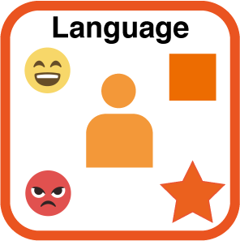
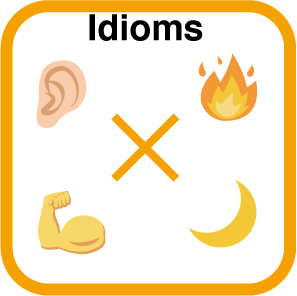

Language & Media


「言葉や情報の伝わり方」に興味をもつメンバーが集まったグループで、
慣用句やネットショッピングなど、日常生活に馴染み深い題材を
扱った展示を制作しています！
また、言語学の研究者の方との共同展示も出展予定です！
「言葉や情報の伝わり方」に興味をもつメンバーが集まったグループで、
慣用句やネットショッピングなど、日常生活に馴染み深い題材を
扱った展示を制作しています！
また、言語学の研究者の方との共同展示も出展予定です！
ことばが想起させるイメージの、まとまり/ちらばりはどれくらい？
みなさんは、「ウキウキ」からどんな感情をイメージしますか？
この展示では、「はじめて出会うオノマトペ」がみなさんを待っています。
出会ったときに感じた感情を心に留め、それにピッタリな絵文字を選びましょう。
みなさんが選んだ絵文字を並べてみると、
このオノマトペが与えるイメージが浮かび上がってくるはずです。
私達が生活で使う言葉はどうやって生まれているのだろう？
SNSで自分と同じ感情の言葉を探したり、使う言葉が
パターン化されたりと、自分の言葉はいったい
どこにあるのでしょうか？
この展示では独創性あふれる慣用句をつくることで、
新たな気づきや言葉の持つ意味、
言葉の組み合わせを楽しんでもらえる展示になっています。
言葉をつくることは、新たな自分を発見することに
繋がると考えています。
私たちは何を見て、買う商品を選んでいるのだろうか？
現代の私たちは、日常の中でたくさんの情報を得ることができます。
しかし、全ての情報を一様に重視しているわけではありません。
では、何を基準に情報の取捨選択を行なっているのでしょうか？
この展示では、ネットショッピングを題材に、
情報の選択と意思決定の過程を振り返ります。